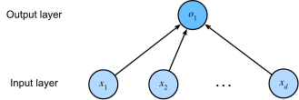

线性回归¶
Note
我们以线性回归为例，来展示使用pytorch训练模型的基本步骤:
载入数据
定义模型、损失函数和优化器
训练
载入数据¶
from sklearn.datasets import load_boston
# 载入boston房价数据集
X, y = load_boston(return_X_y=True)
X.shape, y.shape
((506, 13), (506,))
from sklearn.preprocessing import StandardScaler
import numpy as np
# 数据标准化: z = (x - u) / s
# 标准化是为了保持各个特征之间量纲一致，加速收敛
X_scaled = StandardScaler().fit_transform(X)
import torch
from torch.utils import data
# ndarray转化成tensor
# 需使用float()将dtype转化为torch.float32
# target size should be: (n_samples, 1)
features = torch.from_numpy(X_scaled).float()
labels = torch.from_numpy(y).float().reshape(-1, 1)
#@save
def load_array(tensors, batch_size, is_train=True):
"""使用tensors创建data iter"""
dataset = data.TensorDataset(*tensors)
return data.DataLoader(dataset, batch_size, shuffle=is_train)
batch_size = 16
data_iter = load_array((features, labels), batch_size)
Tip
那先会复用的函数或类的开头会打上#@save标记，它们会保存在d2l.py中，这样其他地方若需要使用只需：import d2l
定义三要素¶

from torch import nn
# 定义模型
model = nn.Sequential(nn.Linear(features.shape[1], 1))
# 定义损失函数
loss_fn = nn.MSELoss()
# 定义优化器
optimizer = torch.optim.SGD(model.parameters(), lr=0.03)
训练¶
num_epochs = 5
for epoch in range(num_epochs):
# 循环获取数据
for X, y in data_iter:
# Compute prediction error
y_hat = model(X)
loss = loss_fn(y_hat, y)
# Backpropagation
optimizer.zero_grad()
loss.backward()
optimizer.step()
print(f'epoch {epoch + 1}, loss {loss_fn(model(features), labels):f}')
epoch 1, loss 35.880005
epoch 2, loss 23.296150
epoch 3, loss 22.786629
epoch 4, loss 24.112381
epoch 5, loss 23.155188